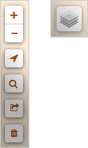
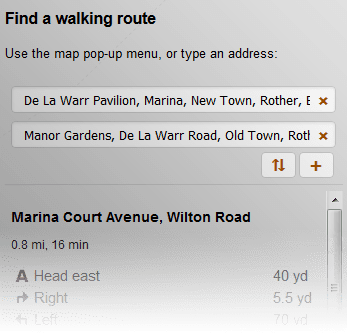

Help
Map controls
The zoom controls ( / ) will enlarge and shrink the map.Your current position can be located if you are in Bexhill by clicking the target icon ().
Find an address on the map by entering part of it into the search box (). A selection will appear if multiple results are found.
If you wish to share your current view and selected POI, click the link icon () and copy the text displayed.
To clear all current layers on the map, click the bin ().
Various different styles of base map can be displayed using the overlay picker.

Tabs
[] Shops: Buildings where general items are sold.[] Amenities: Where to find a meal or a cup of coffee. Social facilities, transport, recycling.
[] Services: Public and private offices and services.
[] Leisure & Tourism: Where to stay, go, socialise and discover Bexhill's historical places.
[] Walking Routes: Select from a few local walks, or create your own!
Find interest
Type in the first three letters of a keyword (e.g. 'police', 'bike', 'diy'). Click the word in the category you are interested in to see it on the map.
Points of interest (POI)
To begin displaying a POI, zoom to an area on the map and click an item - up to 3 POIs can selected at once. After a few seconds corresponding items will be displayed on the map as icons. Larger map areas may take longer to load.
Map icons
Once items have loaded on the map, click on their icon to see a pop-up detailing more specific information. Opening hours are displayed as coloured icons showing if that place is currently open.
Walking routes
Find a route by either entering an address or using the pop-up menu (on the map - right click / long press) where you want to add start and end markers.Add additional markers by dragging an existing path to a new location.
